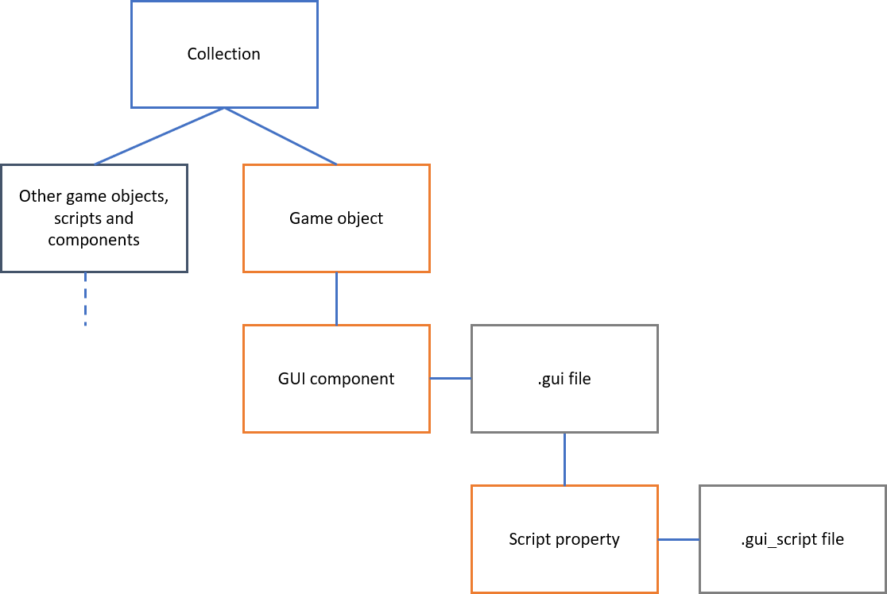
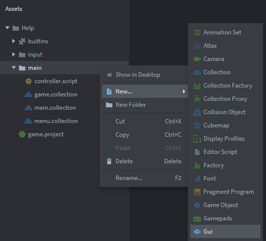
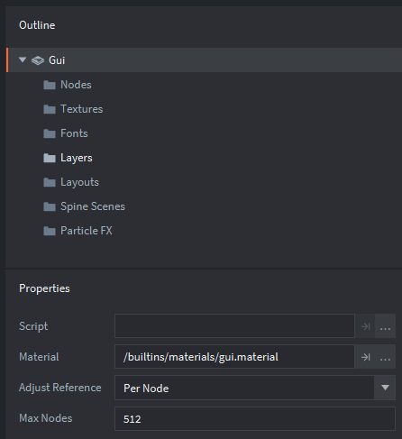
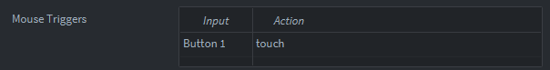

Tutorials for 2D games projects
Building interfaces part 4: Building UI elements with GUI and GUI scripts
Interfaces are built like this in Defold:

A GUI file holds the buttons and other interface elements for the user to interact with. A GUI file must be placed inside a game object like all other components.
The interface elements appear on top of the canvas for the collection hosting the GUI. Therefore any background images etc. should be placed on a game object on the collection and not in the GUI.
- In the assets panel, create a new GUI file.

It is a good idea to name your GUI file the same as the collection it is being used in so you don't get confused later about which components belong to which collections!
You will notice in the outline panel the GUI is made from a number of components, and in the properties we would set the GUI script file to use too.

- Nodes: these are buttons (boxes) and text elements mainly.
- Textures: graphics you want to display on the buttons.
- Fonts: any fonts to use if your buttons have vector text and are not images.
First add in new textures or graphics elements you plan to use. If you want to use button shapes that are not simple boxes with text, you will need to create these as images. There are a number of button building websites you can use. Remember graphics must be stored in an atlas first. It is considerably easier to just make the text and shape of your buttons a graphic.
- As with all components in Defold, simply right click a folder in the outline panel to bring up the context menu to add an element.
- Create a button by right clicking, 'Nodes', 'Add', 'Box'.
- In the properties panel you can set the 'Texture' property to be the image in the atlas you wish to use for the box.
- Build your interface using as many nodes as you need.
You need to create a GUI script to make the buttons work.
- In the assets panel, right click and choose, 'New', 'GUI Script'. Again, name this appropriately.
On face value it looks identical to a normal script with all the same functions. However, this script can refer to GUI components.
- Change the basic script to add interactions.
function init(self)
msg.post(".", "acquire_input_focus")
end
function final(self)
msg.post(".", "release_input_focus")
end
function on_input(self, action_id, action)
if action.pressed and gui.pick_node(gui.get_node("box1"), action.x, action.y) then
msg.post("main:/controller", "show_level1")
elseif action.pressed and gui.pick_node(gui.get_node("box2"), action.x, action.y) then
msg.post("main:/controller", "show_level2")
end
endIt is important that the GUI aquires the input focus and releases it when it is closed. This is achieved in the init and final functions. Remember only one interface can have the input focus at any one time.
Note in the on_input function how we are able to refer to the Id of the box nodes on the GUI. In this example, when they are clicked by the mouse. We didn't need to set up any input bindings, key triggers or actions because there is already one set by default in the game.input_binding file:

A message is passed back to the controller collection to load and enable the collection.
That's the basics of creating a simple user interface to change the collection being shown and to use GUI buttons.
 Craig'n'Dave | Version 1.3
Craig'n'Dave | Version 1.3